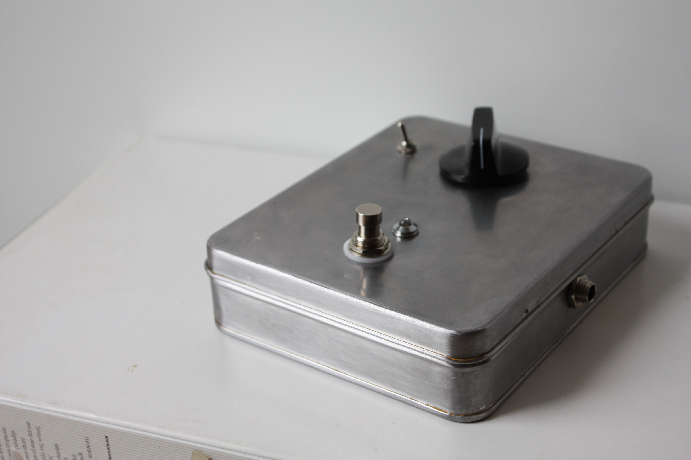
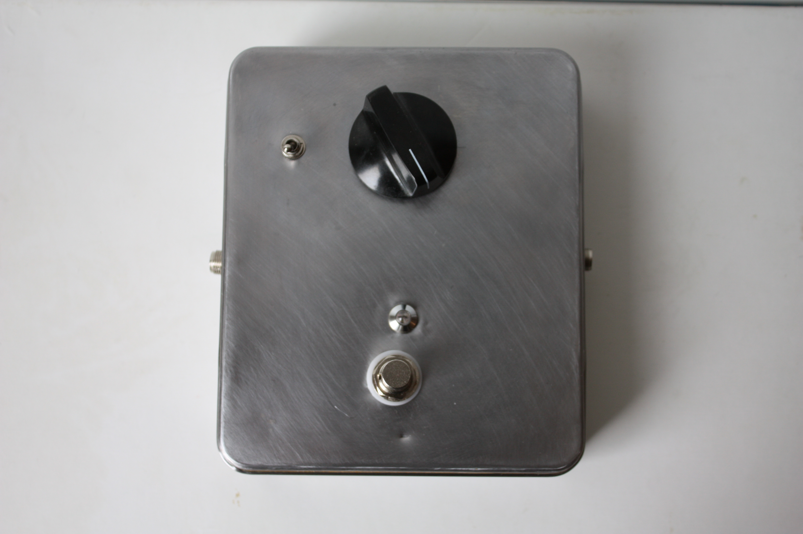

I finished my first pedal! It’s a boost pedal with an optional diode clipping stage. The design is by this guy. It was an easy build but it took me many months before I was ready to build it.
The idea of giving pedal building a go came when I did research for the electronics in the Noise Box. I wanted to have several integrated effects in the Noise Box but I had no experience at all with any kind of electronics. I knew I needed a delay effect and maybe some distortion. I found that many people were selling DIY kits for pedals and I thought that might work for the box. I especially gravitated towards musikding.de as they had great instructions for assembling the kits. I tried to figure out if these kits had to be built in the standard pedal enclosures or could fit in the lid of the box. I got some kind of confirmation that this could work and continued down that track.
The kits are not expensive at all but they come with some components I would not need in the noise box, and as I was on a budget I started to look for something very easy that I could make from scratch with a small amount of components and an easy layout. I found this guy on youtube. His small projects looked manageable so I decided to incorporate both his 7 min fuzz and boost with dirt circuits in the box. This forced me to understand the schematics for the circuits. I still have very little understanding of what the components do in detail but i’m learning every day. This pedal is his 10 min boost design and it’s my second build of that circuit, the first one is in the noise box. I haven’t bought his kit, only created the circuit on a stripboard. The box is obviously not a proper pedal enclosure but it works well.
The pedal sounds ok but not great. There is a high pitched noise that I have no idea what is causing, however the main issue is the character of the overdrive. it sounds a bit dull with a weird transient response going through a clean amp. However, with the dirty channel on my Fender amp just on the breaking point it works as you would expect a boost pedal to work. It pushes the amp into overdrive and it actually pairs quite well with the overdrive of the Fender which lacks in crunch imo.
Here’s a quick demo:
Using a Gibson Les Paul Standard Faded with Burstbucker Pros (and old strings) through a Fender Hot Rod Deluxe, recording with an sm57, no eq in the box.